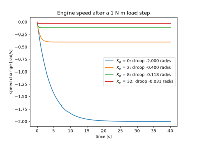
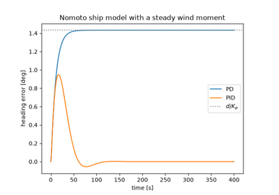
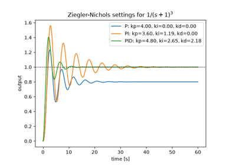
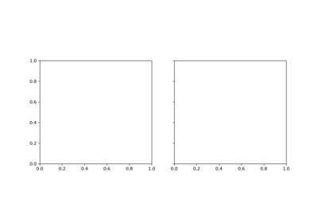
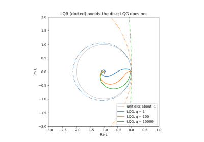
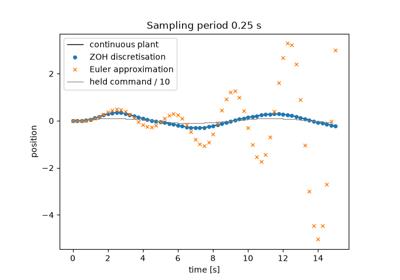
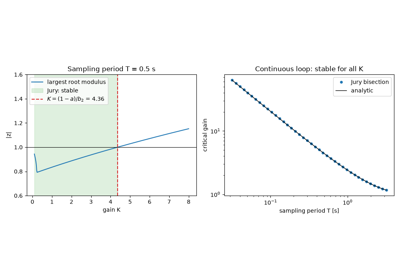
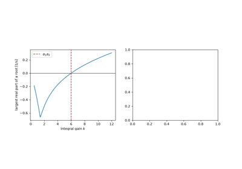
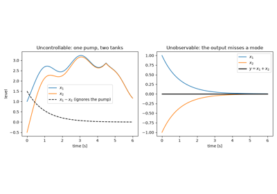

Examples#
This gallery walks through every public feature of
engineeringkit.control_systems, one breakthrough per script: feedback
and PID control, algebraic and Lyapunov stability tests, frequency-response
design and sensitivity, transient specifications, the root locus,
sampled-data control, dead time, nonlinear loops, state-space design and
optimal control and estimation.
Units, assumptions and numerical validation
gives the validity limits. Each script is self-contained and can be run
directly with python examples/control_systems/<section>/<script>.py.
Sections#
feedback – Watt’s governor, Minorsky’s PID, Black’s feedback amplifier and Ziegler-Nichols tuning.
stability – Maxwell’s characteristic roots, Routh’s array, Lyapunov’s direct method and Hurwitz’s determinants.
frequency – Nyquist’s criterion, Bode’s stability margins over every crossover, Bode’s sensitivity integral and the Nichols chart.
time_response – Hazen’s second-order servomechanism and Smith’s predictor for dead time.
root_locus – Evans’s root locus.
sampled – Ragazzini and Zadeh’s zero-order-hold discretisation, Jury’s stability test and Tustin’s bilinear transform.
nonlinear – Andronov’s phase plane and Kochenburger’s describing function.
state_space – Kalman’s controllability, Luenberger’s observer and Wonham’s pole placement.
optimal – Kalman’s LQR and its discrete form, the Kalman-Bucy filter and Doyle’s LQG counterexample.
Feedback#
Governors, feedback amplifiers and PID control.

Watt’s centrifugal governor and proportional droop (1788)

Minorsky’s PID controller for ship steering (1922)

Ziegler and Nichols tune a PID from the edge of instability (1942)
Frequency response#
The Nyquist criterion, Bode plots and stability margins, sensitivity and the Nichols chart.
Nonlinear loops#
The phase plane and the describing function for relays and saturation.

Andronov, Vitt and Khaikin’s phase plane (1937)
Optimal control and estimation#
The linear-quadratic regulator, the Kalman-Bucy filter and the robustness of their combination.

Doyle’s guaranteed margins for LQG: there are none (1978)
Root locus#
Closed-loop poles as the loop gain varies.
Sampled-data control#
Computer control with a zero-order hold or Tustin’s transform, and stability inside the unit circle.

Ragazzini and Zadeh’s sampled-data systems (1952)

Jury’s stability test for sampled systems (1961)
Stability#
Characteristic roots, the Routh and Hurwitz tests and Lyapunov functions.

Maxwell’s “On Governors”: stability from characteristic roots (1868)
State space#
Controllability, pole placement and observers.

Kalman’s controllability and observability (1960)
Time response#
Transient specifications of second-order servomechanisms, and dead time.